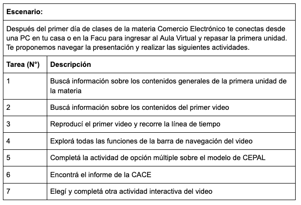
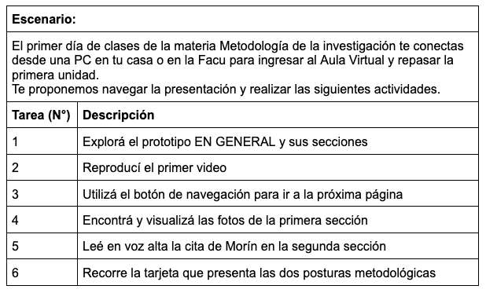

⭐ Clave
En esta etapa nos proponemos probar nuestro material. Hacer un test práctico para ubicar los aspectos que deban ser corregidos y determinar si está en condiciones de ser publicado.
En esta etapa nos proponemos probar nuestro material. Hacer un test práctico para ubicar los aspectos que deban ser corregidos y determinar si está en condiciones de ser publicado.
En el ámbito de diseño de interfaces digitales suele suceder que el equipo creador, al estar tan en contacto con el funcionamiento y el contenido de su objeto, no es capaz de detectar los puntos que pueden ser confusos para un usuario nuevo. Por eso es importante que en esta última etapa invitemos a personas ajenas al proceso de producción a probar el material y realizar retroalimentaciones para la mejora del mismo.
Las pruebas de usabilidad son una buena opción para poner a prueba nuestro material. Consisten en un análisis de los principales aspectos de una interfaz (sitio web, software, aplicación móvil, etc) a través de la experiencia e interacción directa con sus usuarios. Para llevar a cabo este tipo de técnica de evaluación les proponemos seguir los siguientes pasos:
en este caso, el objetivo es evaluar la usabilidad del material educativo, prestando atención a la arquitectura de la información, el diseño de la interacción y la presentación de los contenidos. En nuestro caso de desarrollo de prototipos de materiales educativos nos planteamos los siguientes objetivos.
¿El prototipo es fácil de usar?
¿El prototipo aporta valor agregado a los procesos de enseñanza-aprendizaje? ¿De qué modo?
¿El prototipo es útil para diferentes campos disciplinares?
es conveniente preseleccionar a participantes que sean cercanos al público de destino. En nuestro caso, seleccionamos tres perfiles: docentes, estudiantes y técnicos educativos.
El tercer paso es elaborar una serie de mensajes y tareas que usaremos para explicitar y solicitar a los usuarios que realicen determinado tipo de tareas durante cada momento de la prueba.
Acordar el día y horario con cada grupo de testeadores. Durante las sesiones una persona a cargo deberá presentar las actividades -elaboradas en el punto 2- y acompañar a los usuarios en el tiempo de exploración. Una buena idea es realizar estas sesiones por videoconferencia y durante las mismas solicitar a cada participante compartir su pantalla durante la realización de las actividades. Esto permitirá revisar luego el registro de las tareas realizadas y las apreciaciones al respecto.
A tener en cuenta:
a. Siempre solicitar realizar acciones básicas para la navegación del material. Registrar las primeras impresiones, si el usuario se pierde o no, cómo reaccionan emocionalmente al material.
b. Testear las interacciones clave. Para conocer el grado de interacción efectiva del prototipo, orienten a los usuarios a explorar y testear las partes del recurso que contengan interactividad observando las actividades que se llevan a cabo.
c. Atención a lugares de confusión. Todo proceso de exploración supone diferentes niveles de atención y entendimiento del material, pero también puede suponer que el usuario detenga su exploración al no identificar con claridad las acciones que debe realizar. En ese caso, se sugiere reconocer la confusión, brindar una serie de orientaciones y registrar los escollos.
d. Mantener una escucha atenta. Durante las sesiones es importante que las personas a cargo de las mismas puedan orientar con calma a los usuarios, brindando las orientaciones mínimas para su exploración y prestando atención a aquello que se manifiesta durante la sesión. Lo importante no es que complete las acciones guionadas, sino a partir de estas, descubrir dónde hemos cometido errores en el diseño y dónde podemos mejorar el material.
Al finalizar la navegación es conveniente tener preparadas una serie de preguntas a modo de encuesta para conocer algunos otros aspectos que pudieran no haber surgido durante la navegación, o que pueden emerger con apreciaciones generales elaboradas posteriormente.
Escucha activo-pasiva: atender a lo que dice pero también a cómo lo dice, para ver si hace falta intervenir o no.
Nivel conversacional: activo, se apoya en el guion previamente definido, ir adaptando el escenario a la realidad del usuario. Hacer preguntas abiertas y cerradas
Nivel observacional: pasivo, con especial atención a la conducta del usuario con la interfaz, también a su lenguaje no verbal
Timing: ir midiendo que tanto alejarse y/o pegarse al guión para aprovechar el momento, tener en cuenta los objetivos del estudio
Tips para intervenir:
Según la actitud que va manifestando el usuario, ver cómo intervenir
Eco: repetir la última frase o palabra del usuario pero en tono de pregunta. Ejemplo:
Usuario: Esto es raro..
Moderador: ¿Cómo raro?
Bumerang: no responder la pregunta del usuario sino que en su lugar se la devuelve para que el usuario la resuelva sólo, como si estuviera en una situación normal. Ejemplo:
Usuario: ¿Me tengo que registrar?
Moderador: ¿Qué harías si estuvieras en tu casa? ¿Que creés que tendrías que hacer?
Columbo: responder las preguntas con otras preguntas formuladas de manera incompleta y utilizando pausas para que el usuario complete las oraciones. Ejemplo:
Usuario: ¿Tengo que completar acá con una X?
Moderador: ¿Vos querés saber… si…?
Usuario: Claro, no entiendo si estas cruces significan que el formulario se autocompletó o si tengo que borrarlas y completarlo
Para esta última etapa se diseñó un testeo similar para cada prototipo, sólo se modificaron las tareas específicas solicitadas (relacionadas a los objetivos de cada material). Para cada caso se hicieron tres entrevistas, una por persona con distintos perfiles: docente, profesional de la educación y estudiante. La modalidad fue por videoconferencia, lo que como ya mencionamos facilitó ver y grabar la pantalla de cada usuario.
El guion preparado para este prototipo se veía de la siguiente manera:
Primer momento: introducción (15 min.)
- Abrir la videollamada, iniciar la grabación.
- Presentarse. Comentar el objetivo. Explicar la dinámica de la prueba y qué va a hacer- compartir prototipo, navegar.
Es importante aclarar el uso de la técnica think aloud que consiste en que el usuario DEBE HABLAR EN VOZ ALTA, es decir de manera audio descriptiva, verbalizando sus pensamientos, impresiones y sensaciones
Es importante aclarar que se está EVALUANDO AL PROTOTIPO, no al usuario, por lo que los errores y preguntas serán bienvenidos
Es muy importante tener en cuenta que si el usuario no puede completar una tarea o vemos que demora mucho, está bien. Se contará como tarea incompleta. Y debemos sugerirle pasar a la siguiente tarea
Segundo momento: actividades (20 min.)
- Solicitarle al usuario que abra el prototipo e inicie la opción de Compartir pantalla

Tercer momento: formulario (10 min)
- Invitar a completar un breve formulario (enviar enlace)
Aclarar que para la encuesta de satisfacción de usuario, se utilizará un cuestionario SUS (System Usability Questionnaire) con una escala Likert de 7 puntos, donde 1 es igual a “total desacuerdo” y 7 es igual a “totalmente de acuerdo”.
- Agradecer y despedir
En este caso el procedimiento fue idéntico, pero las actividades a evaluar fueron:

A partir del test, pudimos detectar las siguientes correcciones:
✅ Los nombres de bloques en el menú diferían a los mostrados en la página 1 (corregido).
✅ No se hacía evidente que las imágenes del inicio tenían enlaces (corregido).
✅ Las citas en la sección “El vivo la clase vivida” podían mostrarse mejor (corregido).
✅ La imagen del capítulo final se ve demasiado grande (corregido).
⏹ El cierre queda un poco seco, sería mejor agregar una pequeña síntesis que retome lo abordado (falta corregir).
También se recibieron comentarios positivos que destacaron:
“es un formato interesante para materias largas”
“es muy clara y simple la navegación”
“está bueno para el desarrollo de bolillas, o presentar síntesis y temas principales”
“está buena la caja de búsqueda”
Por lo comentado, pudimos hacer una rápida corrección de algunos puntos importantes y valoramos que el material ya estaba en condiciones para ser usado.
Para cerrar esta etapa, debemos poder decir claramente qué funciona bien y qué es necesario cambiar en el material.
Llegaste al final de esta guía. En este punto sólo nos queda recomendar poner manos a la obra, y no tomarse esta guía muy literal. Los pasos que propusimos son flexibles, pueden solaparse, saltearse, o rotar en su orden. Si encontraste útil esta guía o tenés algún aporte para hacernos nos encantaría saberlo.
¡Saludos y a poner manos y teclados a la obra!
Marcos, Euge y Nico
Obra publicada con Licencia Creative Commons Reconocimiento Compartir igual 4.0